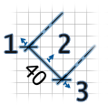
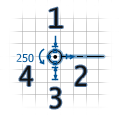
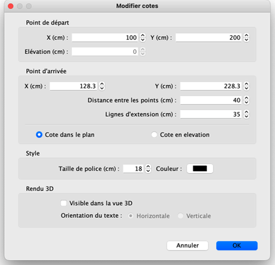
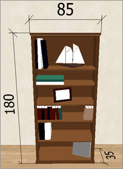

| Modifications des cotes | |||
Vous pouvez modifier la position et la taille des cotes avec la souris ou avec le menu Plan > Modifier
les cotes.... Quand une cote dans le plan est sélectionnée, vous pouvez aussi :
 |
|
Qaund une cote en élévation est sélectionnée, vous pouvez la déplacer, changer son élévation, sa hauteur, son angle et la taille de ses lignes d'extension, à l'aide des indicateurs suivants.  |
|
Quand le pointeur de la souris survole l'un de ces indicateurs, celui-ci change d'aspect pour indiquer que vous pouvez glisser-déposer ce point afin de modifier l'attribut correspondant de la cote sélectionnée. Au fur et à mesure que vous effectuez un glisser-déposer, la taille de la cote modifiée et la longueur qui y est affichée sont mises à jour dans le plan. Une cote peut aussi être modifiée grâce à son panneau, en double-cliquant sur cette cote dans le plan du logement, ou en choisissant Plan > Modifier les cotes... après l'avoir sélectionnée.  Dans le panneau de la cote, vous pouvez modifier les coordonnées de ses points de départ et de fin,
la taille de ses lignes d'extension, si c'est une cote dans le plan ou une cote en élévation qui mesure la hauteur
d'un objet, la taille de sa police de caractères, sa couleur et si elle doit être affichée
dans la vue 3D.  |
|